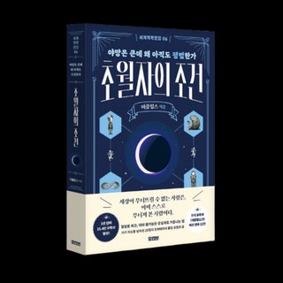

←
르상티망의 지도
STAGE 1
1/5
STAGE 1
당신의 선택
그 다음 벌어지는 일
💡
발견한 원칙
💬
다음으로
🪞
당신의 르상티망 유형
📸 이미지 저장하기
친구한테 시켜보기
탐험 지도로 돌아가기
질투, 비교, 원한의 한복판에서 자기를 넘어선 자들의 사유.

초월자의 조건
야망은 큰데 왜 아직도 평범한가
시리즈 더 보기
싸움의 교양
사랑은 오해다
훔친 부 편